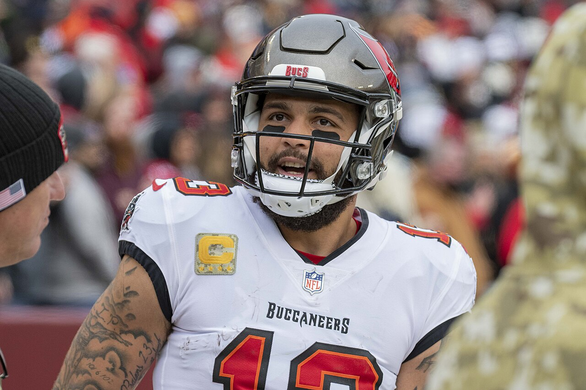

Mike Evans sale con una lesión en el tendón de Aquiles ante los Commanders y está en duda para volver
El mejor receptor de San Francisco se fue cojeando al vestuario antes del descanso del lunes por la noche tras una recepción de 16 yardas, agarrándose el tendón de Aquiles que lo había dejado sin entrenar toda la semana.

Puntos clave
- La noche del lunes de San Francisco dio un giro malo justo antes del descanso.
- La imagen ya era preocupante por sí sola, y la semana previa lo hacía peor.
- Evans estaba haciendo daño a Washington antes de lesionarse.
La noche del lunes de San Francisco dio un giro malo justo antes del descanso. Mike Evans atrapó un pase a finales del segundo cuarto contra los Washington Commanders en el Levi's Stadium, cayó al suelo y se agarró el tendón de Aquiles. Tardó en levantarse, fue cojeando directo al vestuario y no volvió a salir con el equipo. Poco antes del descanso, los 49ers anunciaron que Evans estaba en duda para volver por una lesión en el tendón de Aquiles.
La imagen ya era preocupante por sí sola, y la semana previa lo hacía peor. Evans no entrenó en absoluto antes de este partido. El equipo lo tenía en duda por lesiones en las costillas y en el tendón de Aquiles, y aun así jugó, como ha hecho toda la temporada. Las cámaras de ESPN lo captaron frotándose el tendón de Aquiles en el túnel camino al vestuario.
Una gran primera parte antes de salir
Evans estaba haciendo daño a Washington antes de lesionarse. Atrapó un pase de 24 yardas en la serie inicial antes de que Brock Purdy encontrara a George Kittle para el primer touchdown de la noche. Más tarde, en el primer cuarto, su recepción de 54 yardas puso a San Francisco muy dentro del territorio de Washington, y Christian McCaffrey anotó desde una yarda ocho jugadas después para el 13 a 3. Al descanso, Evans sumaba tres recepciones para 94 yardas, y San Francisco ganaba 20 a 3 tras una segunda carrera de touchdown de una yarda de McCaffrey a 13 segundos del final de la primera parte. El partido seguía en curso cuando se publicó este artículo, y aquí no se informa ningún marcador final.
La recepción que terminó su primera parte fue una de 16 yardas en segundo down y 15 a finales del segundo cuarto. Evans se giró al caer y de inmediato se llevó la mano al tendón de Aquiles, según los periodistas presentes en el partido.
Un grupo de receptores corto se queda más corto
Evans está en su primera temporada con San Francisco tras 12 temporadas en Tampa Bay, y ha sido el mejor receptor del equipo. Llegó al lunes por la noche liderando a los 49ers con 24 recepciones para 326 yardas y tres touchdowns. El grupo de receptores a su alrededor ya estaba corto. Deebo Samuel estuvo inactivo el lunes por una lesión en el tendón de la corva, y si Evans no puede volver en la segunda parte, Purdy se queda lanzando a Jacob Cowing, Jordan Watkins, Brandin Cooks y Malik Turner como receptores, según Niners Wire.
Ambos equipos pierden a un receptor principal
Washington también tuvo una mala noche. El receptor de los Commanders Terry McLaurin salió en camilla en el primer cuarto por una lesión en la rodilla izquierda y quedó descartado, así que al descanso ambos equipos habían perdido al receptor del que más depende su juego de pase. Los 49ers no dieron más detalles el lunes por la noche, más allá de dejarlo en duda. Si Evans vuelve en la segunda parte, y lo que diga el equipo después del partido, indicará qué tan serio es. Por ahora los hechos son claros: el mejor receptor de San Francisco salió cojeando agarrándose el tendón de Aquiles que lo había dejado sin entrenar toda la semana, y puede que no vuelva.
Fuentes
Niners Wire, NBC Sports Bay Area y USA Today informaron sobre la lesión, la salida al vestuario y el estado de duda desde el Levi's Stadium el lunes por la noche.
Cronología
- Oct 19, 2026Evans atrapa un pase de 54 yardas en el primer cuarto que prepara una carrera de touchdown de una yarda de Christian McCaffrey, poniendo a San Francisco 13 a 3.
- Oct 19, 2026Evans sale a finales del segundo cuarto tras una recepción de 16 yardas, va cojeando al vestuario agarrándose el tendón de Aquiles y es anunciado en duda para volver.